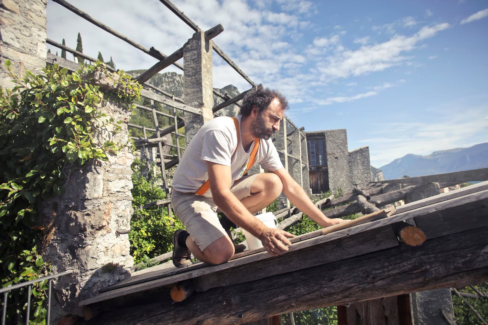

The roofer North Texas has trusted since 2000
Jackson Roofing is a family-owned company built on quality workmanship and personalized care. Led by owner Chris Jackson, we roof homes and businesses across North Texas from our base in the Plano area.
Since 2000, one roof at a time

Since 2000, Jackson Roofing has been the go-to roofing company for North Texas. What started as a straightforward promise, do the work well and treat people right, has grown into more than two decades of roofs across the Plano area and beyond.
Owner Chris Jackson still leads the company the same way it began. He believes a roof is only as good as the crew that installs it and the care that goes into every detail, so he stays personally invested in the work. That is why so many of our customers turn into friends. When we finish a job, we want you to feel like you called someone you trust, not just a contractor.
We roof both homes and businesses, from a single storm repair to a full replacement. Every project starts with a free inspection and an honest quote, and every job is backed by our workmanship and our coverage. If you want to see the full range of what we handle, take a look at every roofing service we offer, from roof repair to commercial roofing for North Texas businesses.
What you get with us
Five things carry through every job we do, whether it is a small fix or a full roof. Ready to see for yourself? Reach out for a free inspection.
High-quality work
Certified installers and premium materials on every roof, so the job is done right the first time.
Fully insured
Our work is backed by guarantees and coverage, so you are protected from the first nail to the final cleanup.
Free estimates
Every estimate is free and every inspection is no-obligation. You get a clear picture and a straight price before you decide.
Insurance help
Storm claim ahead of you? We assist with the process, documenting the damage and coordinating with your carrier.
Top service
Efficient, cost-effective work with quality checks along the way. We treat your home like it is our own.
A word from Chris
"Since 2000 we have built Jackson Roofing one roof at a time, on quality workmanship and treating people right. We want every client to walk away a friend, not just a job we finished."
Chris Jackson
Owner, Jackson Roofing
Straight talk from North Texas clients
Real reviews from Jackson Roofing customers.
"Jackson Roofing did our roof and seven years later it still looks great. They fixed the leak, and the cleanup afterward was excellent."
"The owner was personally involved and invested in the project. The team was quality and responsive from start to finish."
"Professional and prompt with responses. They made the whole thing stress-free from start to finish."
"Professional, coordinated with our insurance, and the quality of the follow-up service was excellent."
About Jackson Roofing
What areas does Jackson Roofing serve?
We serve homeowners and businesses across North Texas from our base in the Plano area, and have since 2000. If you are nearby and unsure whether we cover you, just ask us.
How long has Jackson Roofing been in business?
Since 2000. We have been the go-to roofing company for North Texas for more than two decades, led the whole way by owner Chris Jackson.
Do you offer free roof inspections?
Yes. Every roof inspection is free and no-obligation, and every estimate is free. We look over your roof, explain what we find, and give you a straight quote before any work begins.
Does Jackson Roofing help with insurance claims?
Yes. We assist with the insurance process for storm and hail damage, helping document the damage and coordinate with your carrier.
Do you work on both homes and businesses?
Yes. We handle residential repair, replacement and inspections as well as commercial roofing for North Texas businesses.
Ready for a roof you can trust?
Book a free, no-obligation roof inspection and get a straight answer from a company North Texas has trusted since 2000.